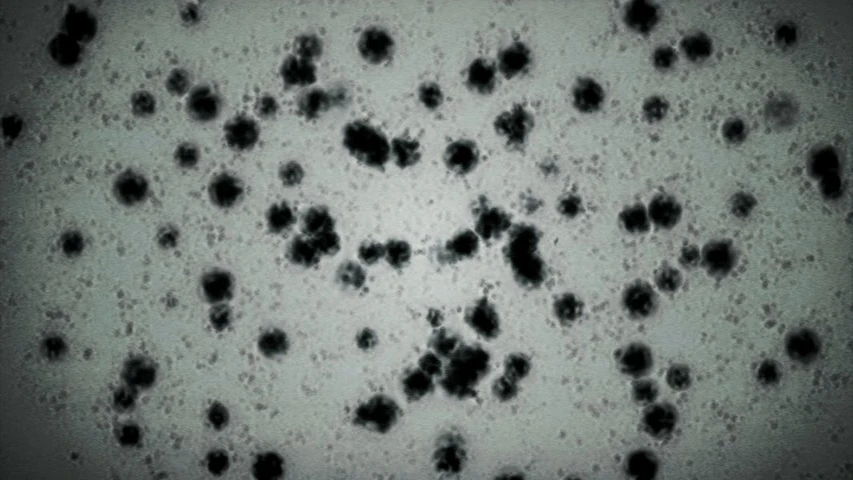
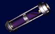

Virus
Los virus de Resident Evil 2 nacieron del virus Progenitor y fueron desarrollados en secreto por la Corporación Umbrella como armas biológicas. Su escape fue el origen del desastre de Raccoon City. Hacé clic en un virus para ver su página.
Los virus de Resident Evil 2 nacieron del virus Progenitor y fueron desarrollados en secreto por la Corporación Umbrella como armas biológicas. Su escape fue el origen del desastre de Raccoon City. Hacé clic en un virus para ver su página.

